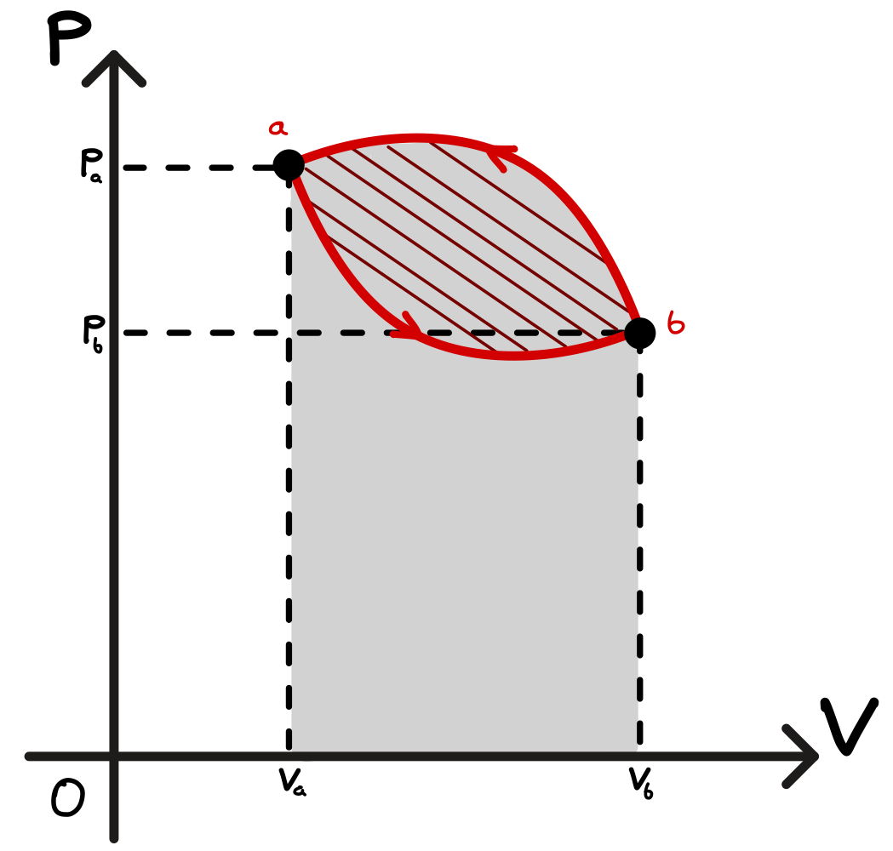

4.11. Questions#
Note: Some questions present have been re-utilized from the Thermal Physics or University Physics with Modern Physics textbooks. Whenever this is the case, we will specify beside the question via:
Thermal Physics \(\rightarrow\) TP ChapterNumber.QuestionNumber
University Physics with Modern Physics \(\rightarrow\) UPMP ChapterNumber.QuestionNumber
Cloud Formation
Explain why cloud formation on top of a mountain is an example of an adiabatic process. In your answer, make reference to the significance of the partial and vapour pressures of water.
Gas Compression
An ideal gas undergoes a compression from \(V_1\) to \(V_2\) that is either isothermal or adiabatic.
For the isothermal case, what is the work done by the gas and how does the internal energy change?
For the adiabatic case, what is the work done by the gas and how does the internal energy change?
(No number crunching is required.)
Increasing the Temperature of a Gas
The temperature of an ideal gas is raised from \(T_c\) to \(T_h\) (\(T_c < T_h\)). This is done in one of two ways: either at constant pressure, or at constant volume.
Indicate these two paths on a \(pV\)-diagram.
Isothermal Processes
Consider a system that undergoes an isothermal expansion from volume \(V_1\) to volume \(V_2\) where \(V_2 = 2V_1\). If \(V_1 = 1 \ \text{L}\), \(T = 300 \ \text{K}\) and \(n = 1 \ \text{mol}\), calculate the work done on the system.
Isothermal Expansion (TP 11.1)
One mole of ideal monatomic gas is confined in a cylinder by a piston and is maintained at a constant temperature \(T_0\) by thermal contact with a heat reservoir. The gas slowly expands from \(V_1\) to \(V_2\) while being held at the same temperature \(T_0\).
Why does the internal energy of the gas not change?
Calculate the work done by the gas and the heat flow into the gas.
Heat Capacities and the Gas Constant (TP 11.2)
Starting from the definitions of \(C_V\), \(C_p\) and \(\gamma\), show that, for an ideal gas:
\[ \frac{R}{C_V} = \gamma - 1 \]and
\[ \frac{R}{C_p} = \frac{\gamma - 1}{\gamma}, \]where \(C_V\) and \(C_p\) are the heat capacities per mole.
Cyclic Processes (UPMP Example 19.3)
The figure below shows a \(pV\)-diagram for a cyclic process in which the initial and final states of some thermodynamic system are the same. The state of the system starts at point \(a\) and proceeds counterclockwise in the \(pV\)-diagram to point \(b\), then back to \(a\); the total work is \(W = -500 \ \text{J}\).
Why is the work negative?
Find the change in internal energy and the heat added during this process.

Fig. 4.20 pV diagram of a cyclic process.#
{kind=link}
Isobaric Boiling (UPMP Example 19.5)
One gram of water (\(1 \ \text{cm}^3\)) becomes \(1671 \ \text{cm}^3\) of steam when boiled at a constant pressure of 1 atm (\(1.013 \times 10^5 \ \text{Pa}\)). The heat of vaporisation at this pressure is \(L_v = 2.256 \times 10^6 \ \text{J} \cdot \text{kg}^{-1}\).
Compute the work done by the water when it vaporises.
Calculate its increase in internal energy when it vaporises.
Path Independence (TP 11.3)
Consider the differential:
\[ dz = 2xy \, dx + (x^2 + 2y) \, dy \]Evaluate the integral \(\int^{(x_2, y_2)}_{(x_1, y_1)} dz\) along the paths consisting of the straight line segments:
\((x_1, y_1) \rightarrow (x_2, y_1)\) and then \((x_2, y_1) \rightarrow (x_2, y_2)\).
\((x_1, y_1) \rightarrow (x_1, y_2)\) and then \((x_1, y_2) \rightarrow (x_2, y_2)\).
Is \(dz\) an exact differential (i.e. does the integral depend only on its start and end points)?